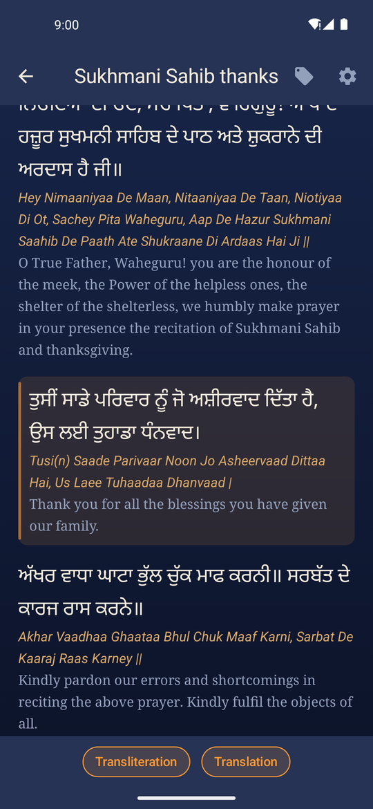
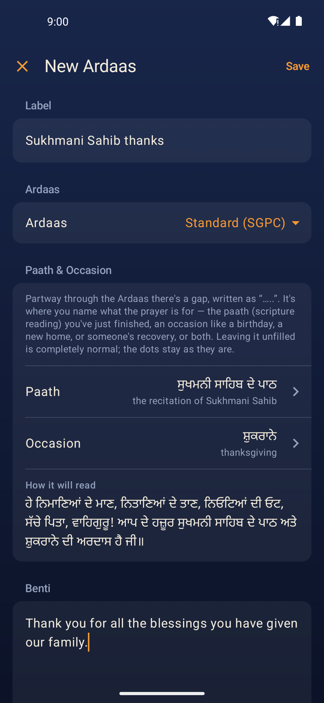
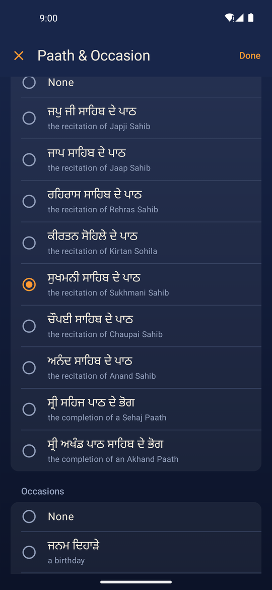
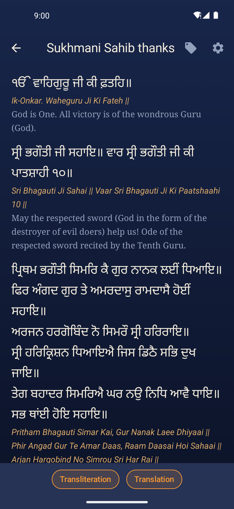

For iPhone and Android
Your benti, in the prayer.
Ardaas lets you write your own benti and read it in its place within the Ardaas, in Gurmukhi, transliteration and English.
Free, as seva. No ads, no account, and nothing you write leaves your phone.




What it does
Your benti, in its place
Write a personal benti and it is set into the Ardaas at the traditional place for a personal supplication, after ਹੇ ਨਿਮਾਣਿਆਂ ਦੇ ਮਾਣ.
Gurmukhi, transliteration and English
Every line in Gurmukhi, with transliteration and English you can show or hide to suit how you read.
Translate to Gurmukhi on your phone
Write your benti in English and translate it to Gurmukhi on the phone itself. Nothing is uploaded, and it works with no signal.
Paath and occasion
Name the paath you have completed, the occasion, or both, and they fill the ….. in the Ardaas, in all three languages.
Two Ardaas texts
The standard SGPC Ardaas and the Buddha Dal Ardaas, each kept as written rather than merged into one.
Keep one for every occasion
Save an Ardaas with a label, edit it later, or duplicate it as the starting point for the next one.
Accuracy comes first
Every change to the Gurmukhi is proof-read before it ships, and the sources for both texts are listed in the app under About & Sources. If you spot an error, please report it and it will be checked and corrected.
Get Ardaas
iPhone
On the App Store now, for iOS 17 and later.

Android
In testing on Google Play. Join the beta in about two minutes, and you'll keep getting updates through the public release.